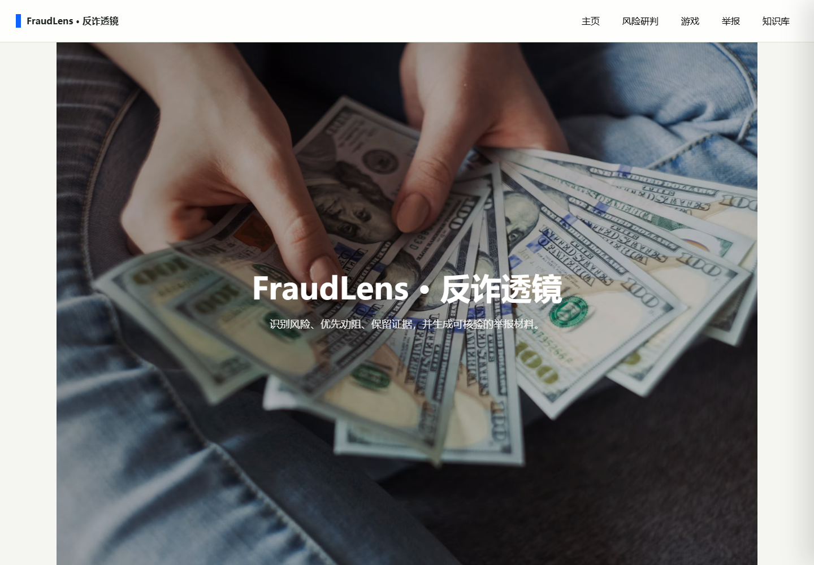
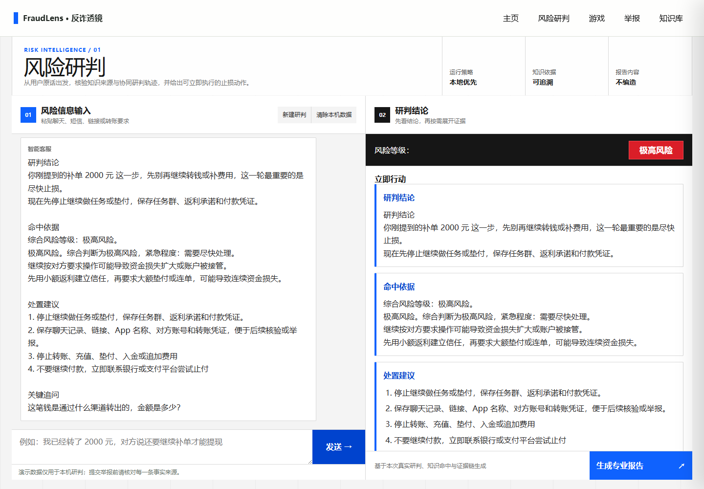

PROJECT / FRAUDLENS
FraudLens · 反诈透镜
可解释的金融反诈研判与交互式劝阻助手
2026 年睿抗机器人开发者大赛（RAICOM）全国一等奖

项目介绍
面向可疑聊天、短信、链接和转账要求，将多轮风险研判、知识检索、证据解释、劝阻建议与情景复盘整合为一套本地优先的 Web 应用。
连续理解风险
追踪付款状态、金额、敏感信息与诈骗阶段，结合多轮对话更新风险研判和行动建议。
让判断有依据
Markdown 与 SQLite 双来源知识检索，结合规则型多 Agent 和交叉核验，展示命中证据与分析过程。
从提醒到复盘
连接场景化报告、本地举报草稿和五类情景模拟，结合积分、勋章提供互动学习反馈。
设计思路
诈骗线索会随着对话不断变化。FraudLens 将风险判断、命中依据和下一步行动放在同一条交互链路中：持续理解用户补充的信息，用知识与证据解释风险，再通过报告与互动学习承接后续操作。
- 接收可疑内容，追踪会话事实与风险阶段
- 检索本地知识，完成规则型多 Agent 分析与交叉核验
- 展示分级劝阻、证据解释与场景化报告
- 整理本地举报草稿，通过情景模拟完成复盘
核心链路采用本地优先设计，完成环境准备后可以离线演示；联网时可选用外部模型改善最终回复表达，风险等级仍由本地链路产生。
真实研判界面

成果与代码
2026 年睿抗机器人开发者大赛（RAICOM）全国一等奖
代码、安装说明、系统架构与开发文档见 Arison591/fraudlens ↗。仓库 fork 自 chenge-skr/raicom- ↗，保留原始提交历史。
当前版本用于反诈教育与项目演示。举报功能保存本地草稿，运行要求与功能范围详见仓库说明。